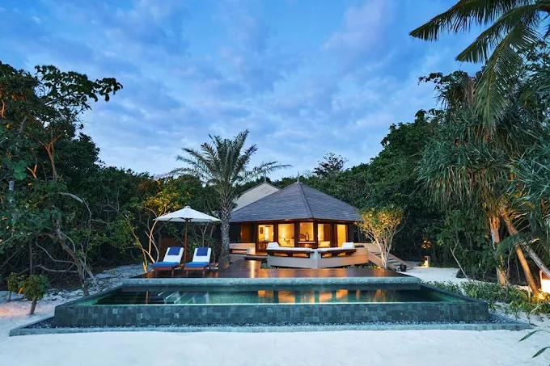
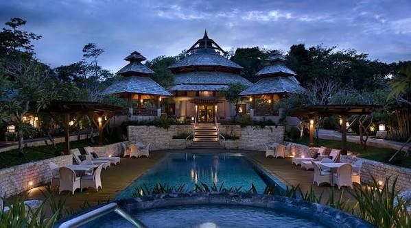
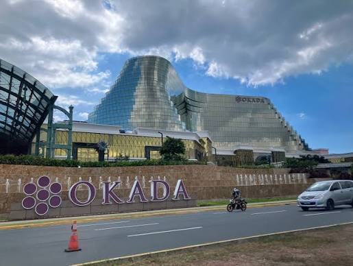
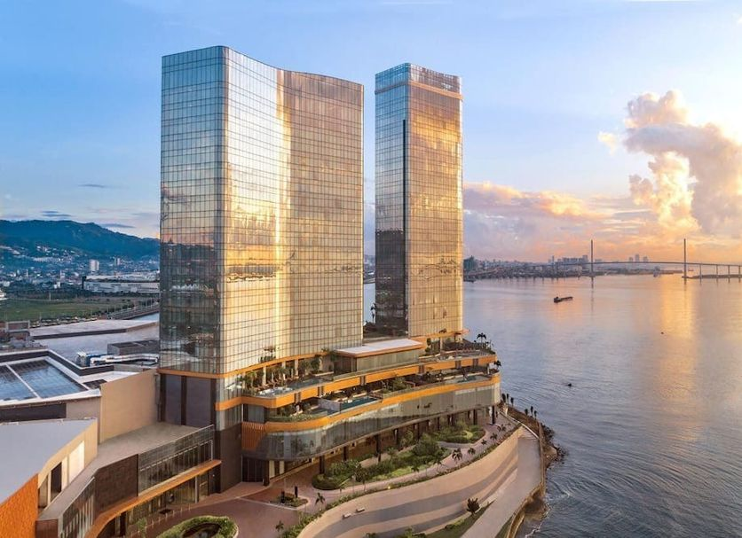
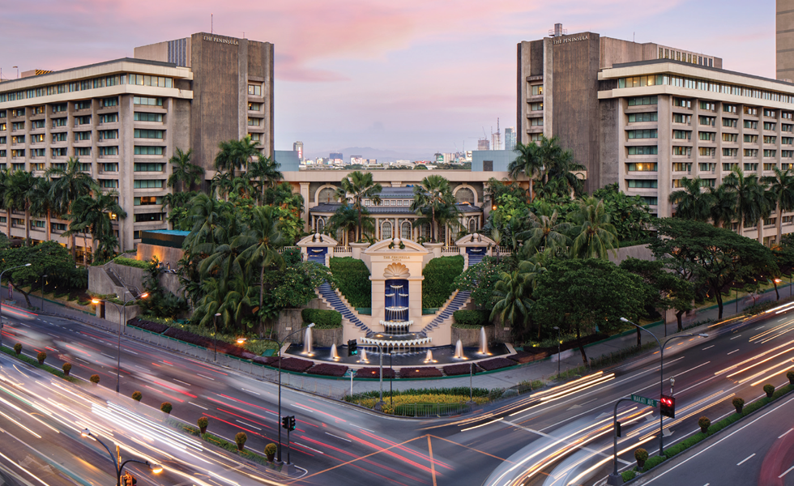

Top 5 Best Hotels In The Philippines
The Philippines is known for its beautiful beaches, rich culture, and warm hospitality. From luxurious resorts to elegant city hotels, there are plenty of amazing places to stay. Here are the top 5 best Filipino hotels that stand out for their comfort, service, and unforgettable experiences.

Amanpulo (Pamalican Island, Palawan)
Exclusive private island setting in the Cuyo Archipelago featuring luxury casitas and beach villas; acclaimed for personalized service, pristine white-sand beaches, and exceptional gourmet dining reflecting local and international flavors.
Book Now!

Shangri-La Boracay (Boracay Island, Aklan)
Stunning treehouse villas and private beachfront access; widely recognized for unmatched hospitality, extensive culinary selections (including dedicated halal options), and a secluded luxury ambiance away from the main crowds.
Book Now!

Okada Manila (Parañaque, Metro Manila)
Iconic high-end urban resort featuring dramatic fountain displays, massive opulent suites with sweeping bay vistas, and a vibrant entertainment complex.
Book Now!

Fili Hotel at NUSTAR Resort Cebu (Cebu City, Cebu)
Top-rated modern luxury property in the Visayas region blending contemporary Filipino warmth with sophisticated design and panoramic seaside views.
Book Now!

The Peninsula Manila (Makati Central Business District, Metro Manila)
Legendary historic landmark in the financial capital known for timeless elegance, exceptional five-star service, and the iconic gallery lobby.
Book Now!